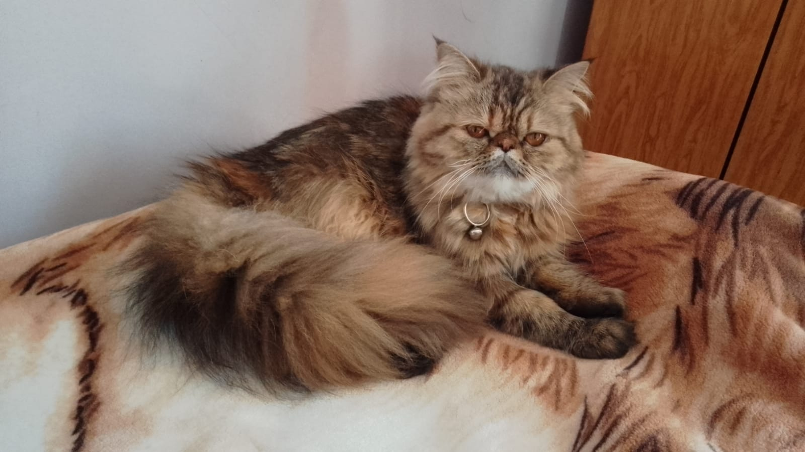

Nuestra Familia y Entorno
Somos un criadero familiar hubicado en Bernal Oeste Partido de Quilmes Pcia. de Buenos Aires dedicado al bienestar y la cría responsable de Gatitos Persas. Ellos nacen y crecen en un ambiente familiar, donde disfrutan del aire libre y crecen en un entorno saludable y lleno de amor y en contacto permanente con nosotros, por lo cual estan acostumbrados al contacto permanente con personas.
Nuestro deseo es entregar gatitos sanos, con un temperamento dulce y perfectamente adaptados a la vida en el hogar.
Contactenos por Whathsapp:
Movil 1: 3886074604 (el numero es de Jujuy pero vivimos en Bernal Oeste)
Movil 2: 1144137431
Si lo desea puede concertar una visita tambien a estos numeros para conocerlos en persona
Tambien puede ver la seccion Disponibles para ver sus fotos

Los papas
Ambos padres son Persas. La mama Karo Lina es Persa Carey y el papa Milo es Persa Himalayo Red Point. Ambos cuidadosamente criados, alimentados con productos premium, con su calendario de vacunas al dia y criados en un entorno saludable y con mucho amor.
Karo Lina

Milo

Cuidados Básicos del Persa
Mantener a tu gatito persa feliz, saludable y con un pelaje espectacular requiere de atención constante y amor:
- Cepillado diario: Esencial para evitar nudos en su abundante pelo largo.
- Limpieza de facial: Cuidado diario de sus ojitos para evitar manchas por lagrimeo natural.
- Dieta adecuada: Alimento balanceado premium que cuide su digestión y pelaje.
- Muchos mimos y amor: Son gatos cariñosos y tranquilos que adoran la compañía familiar.